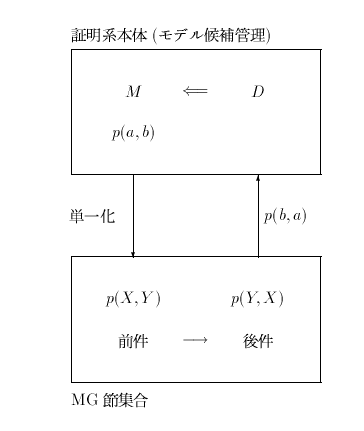

さて、KL1ゴールとKL1節の頭部間の頭部単一化は、 並行動作における同期機構を簡潔に実現する目的で、 KL1節側の変数しか束縛を許さない一方向の単一化になっている。 したがって、KL1で実装する場合は、MG節をKL1節で表現し、 連言照合はKL1節の頭部単一化を利用するのが簡便かつ効果的と考えられる。 これにより、MG節の複製に伴う新変数の導入もKL1実行系に委ねることができる。
そこで、モデル生成型定理証明系MGTPをKL1で実現する際、 以下のような基本構成をとるのが適切である。

すなわち、モデル候補Mを管理する証明系本体と MG節集合を表現するKL1節の部分とを分離し、 図中のMG節 Cn : p(X,Y) --> p(Y,X) は、 以下のようなKL1節で表現する。(*1)
これにより、節の前件の充足可能性テストにおける単一化は、 たとえば証明系本体がMからアトム p(a,b) を選び出し、 MG 節集合部の KL1 節を呼んで、 その頭部で表現された前件リテラル p(X,Y) に照合させる、というふうに実現することができる。 ここで、p(X,Y) と p(a,b) の照合が成功すると、 後件インスタンス p(b,a) が証明系本体に返される。 p(b,a) がMによって充足されなければMを 拡張すべきアトムの候補となるので、 証明系本体で一旦モデル拡張候補集合Dに格納する。(*2)
(*2) : 実際には、後件の充足性テストはそれがモデル拡張候補として選ばれる 直前に行なえば良い。